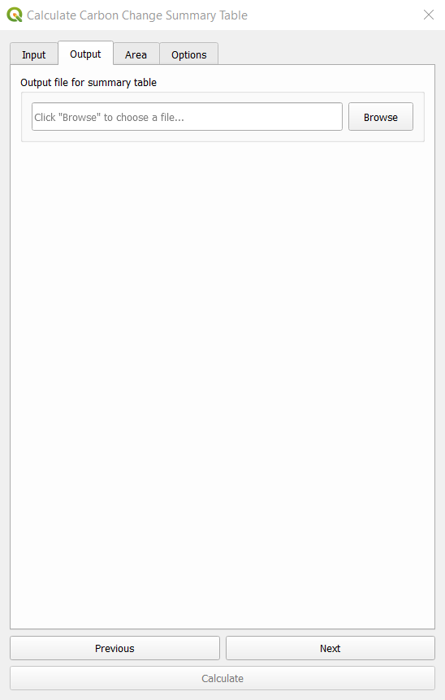
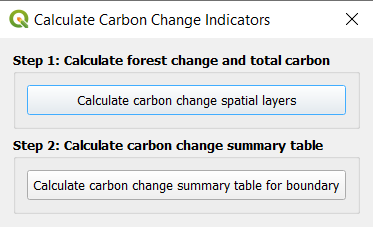
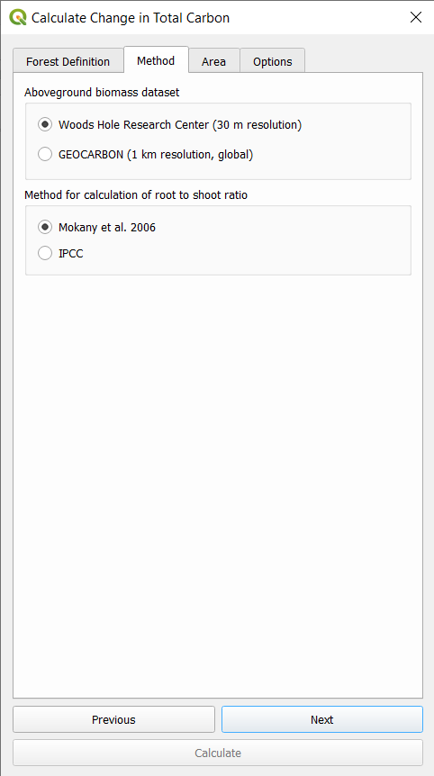

Calculate Forest Degradation
Compute Forest Fires
Burnt areas and forest fires are be highlighted and mapped out form remotely sensed Landsat 8 /Sentinel 2 data using the Normalized Burn Ratio (NBR). NBR is designed to highlight burned areas and estimate burn severity. It uses near-infrared (NIR) and shortwave-infrared (SWIR) wavelengths. Before fire events, healthy vegetation has very high NIR reflectance and a low SWIR reflectance. In contrast, recently burned areas show low reflectance in the NIR and high reflectance in the SWIR band.
The NBR is be calculated for Landsat/Sentinel images before the fire (pre-fire NBR) and after the fire (post-fire NBR). The difference between the pre-fire NBR and the post-fire NBR referred to as delta NBR (dNBR) is computed to highlight the areas of forest disturbance by fire event.
Classification of the dNBR is be used for burn severity assessment, as areas with higher dNBR values indicate more severe damage whereas areas with negative dNBR values might show increased vegetation productivity. dNBR is classified according to burn severity ranges proposed by the United States Geological Survey(USGS)
To compute the above forest fires, click on the calculator icon . This will open up the “Calculate Indicators” dialog box.

Select the “Forest Degradation Hotspots” to open the window for this analysis then select Forest Fires.
Select either “Landsat 8” or “Sentinel 2”, a Pre-fire and Post-fire perio, the area of interest then calculate your parameters.
To view your final result go to “Download results from Earth Engine” and refresh the list, then select the task and download the results. This will add 3 datasets to the map view i.e Prefire NBR, Postfire NBR and dNBR imagery.
Compute Forest Change and Total Carbon & Summary
The quantification of the forest gain/loss hotspots will be based on pre-existing high-resolution global maps derived from Hansen Global Forest change dataset that can be accessed using Google Earth Engine API. The maps are produced from time-series analysis of Landsat images characterizing forest extent and change over time.
Step 1: Compute Forest Change and Total Carbon
To compute Forest Change and Total Carbon, click on the calculator icon . This will open up the “Calculate Indicators” dialog box.
Select Forest Change and Total Carbon and select Step 1, calculate Forest Change and Total Carbon to open the window for this analysis.
Provide an Initial and Target year for the Hansen Global Forest Change dataset. Also provide a value considered forest cover percentage.

Next select the above ground biomass dataset to be used and the method for calculating the root to shoot ratio. Procees to select the area of interest and label your task then calculate.
To view your final result go to “Download results from Earth Engine” and refresh the list, then select the task and download the results. This will add 2 datasets to the map view i.e Total carbon and Forest loss

Step 2: Generate Carbon Change Summary
To generate a carbon change summary, select Step 2, Calculate carbon change summary table to open the window for analysis.

Provide the input datasets generated from step 1 (Auto-detected if already loaded onto the map view).

Set the output location for the summary table file, select the same area of interest as in step 1 and calculate.

A summary file in xlsx format will be generated on completion similar to the one shown below.